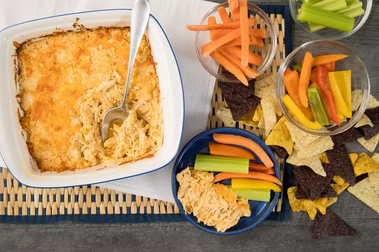

Cheesy Buffalo Chicken Dip

Description
This Buffalo shredded chicken dip is perfect for a tailgate party — or anytime! Shredded chicken, cream cheese, hot sauce, and lots of melted cheese create a wonderful Buffalo wing flavor on chips or veggie sticks.
Ingredients
- 2 bone-in chicken breast halves
- 1 teaspoon olive oil
- 1 stalk celery, finely diced
- 1 (8 ounce) package reduced-fat cream cheese
- 3/4 cup blue cheese dressing
- 1/3 cup hot pepper sauce (Franks)
- 1 cup shredded Cheddar cheese
Steps
- Place chicken breasts in a large saucepan; cover with water. Bring to a boil and cook until no longer pink in the center and the juices run clear, about 20 minutes. An instant-read thermometer inserted into the center of a breast should read at least 165 degrees F (74 degrees C). Drain and allow chicken to cool enough to handle. Pull meat from bones and skin. Shred meat and set aside.
- Preheat the oven to 350 degrees F (175 degrees C)
- Heat olive oil in a large skillet over medium heat. Cook and stir celery in hot oil until soft. Mix in cream cheese, blue cheese dressing, and ranch dressing. Cook and stir until smooth and creamy. Stir in shredded chicken and hot sauce. Transfer to an 8x8-inch baking dish and sprinkle with shredded cheese.
- Bake in the preheated oven until golden and bubbly, about 30 minutes.